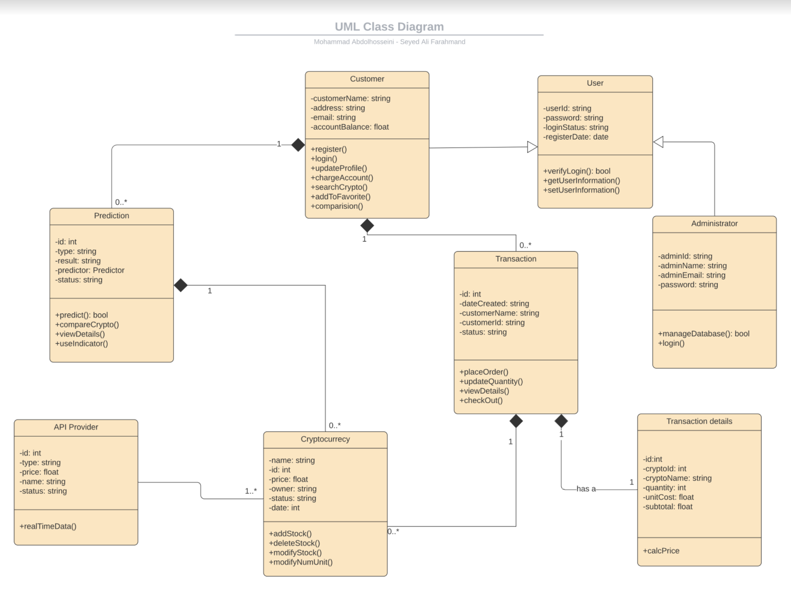
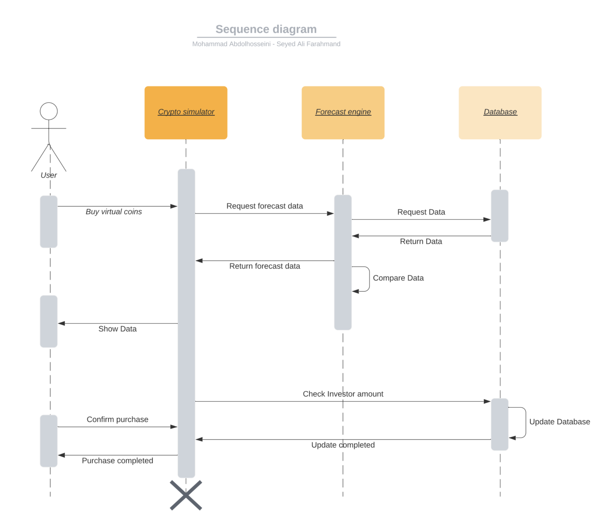
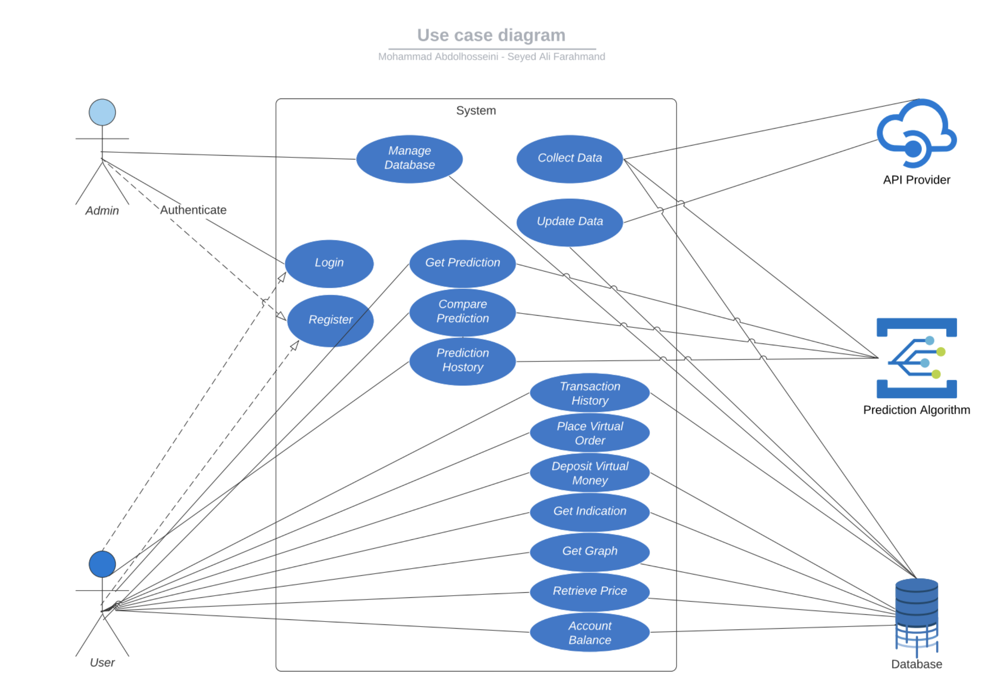

The Data Flow Diagram shows the way information flows through our web application, it is a visual representation of any process or system's flow of information. By mapping out processes or system's flow of data, DFDs help better understanding of processes. It includes data inputs and outputs, data stores, and the various sub processes the data moves through.
The UML Class Diagram is the main building block of object-oriented modeling. It is used for general conceptual modeling of the structure of the application, and for detailed modeling translating the models into programming code. Class diagrams can also be used for data modeling
The Sequence Diagram shows object interactions arranged in time sequence. It depicts the objects involved in the scenario and the sequence of messages exchanged between the objects needed to carry out the functionality of the scenario
The Use Case Diagram represents interaction with the system that shows the relationship between the user and the different use cases in which the user is involved. Use Case Diagrams contain 4 components: boundary, the actor, the use cases, and the relationship between the actors and the use cases.
{kind=link}
{kind=link}
{kind=link}
{kind=link}